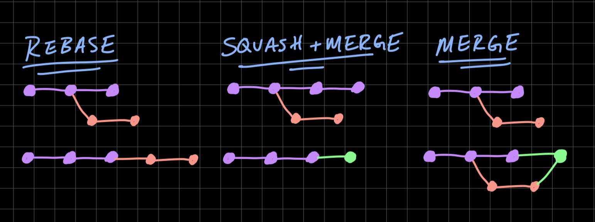

Этот репозиторий представляет мою базу знаний по С++
В качестве его основы я взял эти карты:

Префиксный - увеличивает значение до выполенения кода в строке где его вызвали.
Постфиксный - после выполнения кода в строке в которой его вызвали.
! Постфиксный немного медленее т.к. возвращает копию переменой которую инкрементировал.
Операторы могут быть левоассоциативными - выполняются слева направо и правоассоциативными - выполняются справа налево.
Большинство операторов левоассоциативны.
Правоассоциативными операторами являются все унарные операторы, различные операторы присваивания и условный оператор.
<< сдвиг влево
>> сдвиг вправо
~ поразрядная инверсия
| поразрядное ИЛИ
& поразрядное И
^ поразрядное исключающее ИЛИ
Если нужно записывать определенные биты, не стирая другие:
Чтобы записать единицу в бит n:
x |= (1 << n);
Чтобы записать ноль в бит n:
x &= ~(1 << n);
Если нужно инвертировать состояние бита:
x ^= (1 << n);
Если нужно прочитать отдельный бит:
unsigned char x = (1 << 2) | (1 << 3) | (1 << 7);
if (x & (1 << 2)) { /* во второй бит вписана единица */ }
if (x & (1 << 3)) { /* в третий бит вписана единица */ }
if (x & (1 << 7)) { /* в седьмой бит вписана единица */ }
Если нужно определить, что в X на N-й позиции:
bool b = (bool((1 << n) & x))
Если нужно обнулить один или несколько битов:
int x = 58; // 00111010
int y = x & 0x0F; // 00001010
//или
x = x & (~((1<<3)|(1<<5)|(1<<6))); //обнуляем третий, пятый и шестой биты
Если нужно установить заданные биты в единицу. Используют оператор |
int x = 155
x = x | 4; //устанавливаем в единицу второй бит переменной x
Сдвигает число на n разрядов влево
unsigned char x = 3; //0b00000011
x = x << 3; //0b00011000 (24)
Сдвиг вправо >>
unsigned char x = 255; //0b11111111
x = x >> 3; //0b00011111 (31)
Этот пункт я создал в связи с вопросом о размерах экземляров классов в памяти.
Сколько в памяти занимает произвольная структура?
Ответ: sizeof всех членов + остаток для выравнивания (по умолчанию выравнивание 4 байта) + sizeof указателя на vtable (если есть виртуальные функции) + указатели на классы предков, от которых было сделано виртуальное наследование (размер указателя * количество классов) Пример:
Сколько в памяти занимает структура без членов? sizeof пустого класса не определён, но должен быть > 0. Это нужно чтобы не получить ошибку division by zero в таких случаях
struct Foo{};
В чем отличие malloc от new? Ответ: malloc — выделение блока памяти в стиле Си, опасное с точки зрения приведения типов (non-typesafe), т.к. возвращает void * и требует обязательного приведения. new — выделение блока памяти и последующий вызов конструктора, безопасное с точки зрения приведения типов (typesafe), т.к. тип возвращаемого значения определен заранее. (new вызывает конструктор)
В чем различия между delete и delete[]?
Ответ: delete предназначен для уничтожения объектов, память под которые выделена при помощи new(). delete[] для объектов выделенных при помощи оператора new.
Эффективный и современныи С++: 42 рекомендации по использованию С++ 11 и С++ 14 - Скотт Мейерс - Глава 3.4
Предпочитайте перечисления с областью видимости перечислениям без таковой
Обычно фигуные скобки огрничивают область видимости для всех объявленных внутри них.
С Enum-ами все иначе.
enum Color {black, white, red}; // blсk, white, red находятся
// в той же области видимости,
// что и Color
Из-за этого есть ввели два типа enum-ов:
Перечисления с областью видимостиб не допускают указанной выше утечки имен:
enum class Color { blасk, white, red }; // blасk, white, red принадлежат
// области видимости Color
Color с = white; // Ошибка ' Нет имени перечисления
// "white" в этой области видимости
Color с = Color::white; // Это ок
auto с = Color::white; // Это хорошо
Приемущества scoped enum:
unscoped enum - неякно преобразуются в int (а потом и double)
eпum Color { Ьlack, white, red }; // Перечисление без
//области видимости
std::vector<std::size_t> primeFactors (std::size_t х ) ;
// Функция, возвращающая
// простые делители х
Color с = red;
if (с < 14.5) // Сравнение Color и double (!)
{
auto factors = primeFactors(c); // Вычисление простых делителей
// значения Color (!)
}
С scoped enum - другая история. НИкаких неявных преобразований
enum class Color { black, white, red}; // Перечисление с областью видимости
Color с = Color::red; // Как и ранее, но с квалификатором
// области видимости
if (с < 14.5) // Ошибка ! Нельзя сравнивать
// Color и double
{
auto factors = primeFactors(c); //Ошибка ! Нельзя передавать Color в
// функцию, ожидающую std::size_t
}
Если нужно привести class enum к другому типу - нужно использовать приведение типов
if (static_cast<double>(c) < 14.5) // Странный, но
// корректный код
auto factors = // Сомнительно, но компилируется
primeFactors (static_cast<std::size_t>(c));
(Польза этого проявляется когда нужно будет добавить элемент в перечисление. Если не использовать предварительное объявление будут пересобраны все места где эти enum-ы используют)
enum Color; // Ошибка !
enum class Color; // ок
Каждое перечисление имеет целочисленный базовый тип (underlying type) которое определяется компилятором.
Для неболщих перечеслений может использоваться char.
Для перечислений с большим диапазоном значений будет использоваться другой тип.
Для эффективного использования памяти компиляторы часто выбирают наименьший базовый тип (которого достаточно).
В некоторых случаях, когда компиляторы выполняют оптимизацию по скорости, а не по размеру, они могут выбрать не наименьший допустимый тип.
По умолчанию базовым типом для eпum с областью видимости является int.
Если вас не устраивает значение по умолчанию, вы можете его перекрыть:
enum class Status : std::uint32_t; // Базовый тип для Status -
// std::uint32_t (из <cstdint>)
Чтобы указать базовый тип для перечисления без области видимости, вы делаете то же, что и для перечисления с областью видимости, и полученный результат может быть предварительно объявлен:
enum Color : std::uintB_t; // Предварительное объявление
// перечисления без области видимости;
// базовый тип - std::uint8_t
при обращениии к полям кортежа std::tuple
Предположим, например, что у нас есть кортеж, содержащий имя, адрес электронной почты и значение репутации пользователя на сайте социальной сети:
using Userinfo =std::tuple<std::string, // Имя
std::string, // Адрес
std::size_t> // Репутация
Для удобства создадим enum с соответсвующими названиями элементов кортежа
enum UserinfoFields { uiName, uiEmail, uiReputation } ;
UserInfo uinfo; // Как и ранее
auto val = std::get<uiEmail> (uinfo); // Значение адреса
Все было бы гораздо сложнее без неявного преобразования значений.
Соответствующий код с применением перечисления с областью видимости существенно многословнее:
enum class UserinfoFields { uiName , uiEmail, uiReputation } ;
Userinfo uinfo ; //Как и ранее
auto val =
std::get<static_cast<std::size_t> (UserinfoFields::uiEmail)>(uinfo);
Эффективный и современныи С++: 42 рекомендации по использованию С++ 11 и С++ 14 - Скотт Мейерс - Глава 4
Интеллектуальные указатели представляют собой оболочки вокруг встроенных указателей, которые действуют так же, как и встроенные указатели, но позволяют избежать многих связанных с последними ловушек. Поэтому вы должны предпочитать встроенным указателям интеллектуальные
В С++11 имеются четыре интеллектуальных указателя: - std::аutо_ptr, - std::unique_ptr, - std::shared_ptr, - std::weak_ptr.
По производительности: -raw -std::unique_ptr -std::shared_ptr
Является устаревшим указателем, доставшимся в наследство от С++98. В С++11 его заменил std::unique_ptr.
В С++98 небыло семантики перемещения, необходимой для std::аutо_ptr. Поэтому в std::аutо_ptr превратили операцию копирования в перемещение. А это привело кк тому, что при копировании std::аutо_ptr он становился равен = nullptr.
Единственный случай обоснованного применения std::auto_ptr - необходимость компиляции кода компилятором С++98. Если у вас нет такого ограничения, вы должны заменять std::auto_ptr указателем std::unique_ptr.
Что стоит учитывать при использовании auto_ptr? Ответ: Так как данный умный указатель реализует подход разрушающего копирования, то при присвоении его другому умному указателю оригинальный потеряет свое значение. А так же его нельзя использовать в стандартных STL контейнерах.
std::unique_ptr делает все то же, что и std::auto_ptr, плюс еще кое-что. Он делает это максимально эффективно и безо всяких искажений понятия копирования объекта. Он во всех отношениях лучше std::auto_ptr.
по умолчанию std::unique_ptr имеет тот же размер, что и обычный указатель, и для большинства операций (включая разыменования) выполняются точно такие же команды. (почти всегда работаю так же быстро и занимают столько же памяти как и обычные указатели)
Испоnьзуйте std::unique_ptr дnя управnения ресурсами путем искnючитеnьноrо впадения
Интеллектуальные указатели std::unique_ptr воплощают в себе семантику исключительного владения.
std::unique_ptr является только перемещаемым типом
При деструкции ненулевой std::unique_ptr освобождает ресурс, которым владеет. По умолчанию освобождение ресурса выполняется с помощью оператора de lete, примененного ко встроенному указателю в std::unique_ptr.
Обычное применение std::unique_ptr - возвращаемый тип фабричных функций для объектов иерархии.
В процессе конструирования объект std::unique_ptr можно настроить для использования пользовательских удалителей (custom deleters): произвольных функций (или функциональных объектов, включая получающиеся из лямбда-выражений), вызываемых для освобождения ресурсов.
auto funForDelete = [](MyClass* a)
{
doSomething(a);
delete a;
}
std::unique_ptr<MyClass, decltype(funForDelete)> ptr(nullptr, funForDelete);
ptr.reset(new Bond(std::forward<Data>(data)))
Если в std::unique_ptr используются пользовательские удалители, то в его размер увеличивается на слова-два (удалители - указатель на функцию)
Функциональные объекты без состояний (например, получающиеся из лямбда-выражений без захватов) не приводят к увеличению размеров std::unique_ptr, а это означает что когда пользовательский удалитель может быть реализован как функция или как лямбда-выражение, то реализация в виде лямбдавыражения предпочтительнее
Удалители в виде функциональных объектов с большим размером состояния могут привести к значительным размерам объектов std::unique _ptr. Если вы обнаружите, что пользовательский удалитель делает ваш интеллектуальный указатель std : : unique _ptr неприемлемо большим, вам, вероятно, стоит изменить свой дизайн.
auto funForDel1 = [] (MyClass* plnvestment)
{ // Пользовательский удалитель
makeLogEntry (plnvestment) ; // как лямбда-выражение
delete plnvestment; // без состояния
};
std::unique_ptr часто используют для реализации pimpl
Интеллектуальный указатель std::unique_ptr имеет две разновидности:
- одну - для индивидуальных объектов (std::unique_ptr
в случае указателя для одного объекта отсутствует оператор индексирования (operator [] ),
в случае указателя для массива отсутствуют операторы разыменования (operator* и operator- >).
Существование std::unique_ptr для массивов должно представлять только интеллектуальный интерес, поскольку std::array, std::vector и std::string почти всегда оказываются лучшим выбором, чем встроенные массивы
Единственная ситуация, когда std::unique_ptr<T [] > имеет смысл - при использовании С-образного API, который возвращает встроенный указатель на массив в динамической памяти, которым вы будете владеть.
std::unique_ptr можно легко и эффективно преобразовать в std::shared_ptr.
Благодаря этому этот указатель хорошо подходит для возвращаемого типа фабричных функций.
Не может работать с массивами ( и пробовать не стоит)
Испопьзуйте std::shared_ptr дпя управпения ресурсами путем совместноrо владения
Объект, доступ к которому осуществляется через указатели std::shared_ptr, имеет время жизни, управление которым осуществляется этими указателями посредством совместного владения
Когда последний указатель std::shared_ptr, указывающий на объект, прекратит на него указывать (например, из-за того, что этот std::shared_ptr будет уничтожен или перенаправлен на другой объект), этот std::shared_ptr уничтожит объект, на который он указывал.
В std::shared_ptr есть счетчик ссылок (не в нем а в блоке управления) - показывающий сколько std::shared_ptr указывает на один и тот же ресурс.
Конструкторы std::shared_ptr увеличивают этот счетчик (обычно увеличивают - см. ниже),
деструкторы std::shared_ptr уменьшают его,
а операторы копирующего присваивания делают и то, и другое.
// sp1 и sp2 - std::shared_ptr указывающие на разные объекты.
// При:
sp1 = sp2;
// sp1 - теперь указывает на ресурс sp2
// счетчик sp1 - уменьшается
// счетчик sp2 - увеличивается
Если std::shared_ptr после выполнения декремента видит нулевой счетчик ссылок, это означает, что на ресурс не указывает больше ни один std::shared_ptr, так что наш интеллектуальный указатель освобождает этот ресурс.
Особенности:
При вызове конструктора перемещения счетчик не изменяется.
Использование перемещающего конструктора std::shared_ptr, делает исходный указатель нулевым.
Старый указатель перестает указывать на ресурс в тот же момент как новый начинает это делать.
Таким образом, перемещение std::shared_ptr оказывается быстрее копирования: копирование требует увеличения счетчика ссылок, а перемещение - нет.
Это справедливо как для присваивания, так и для конструирования, так что перемещающее конструирование быстрее копирующего
конструирования, а перемещающее присваивание быстрее копирующего присваивания.
В отличии от std::unique_ptr тип удалителя не является частью типа интеллектуального указателя std::shared_ptr:
std::unique_ptr<Widget, decltype(funForDel)> // Тип удалителя является
upw (new Widget, funForDel); // частью типа указателя
std::shared_ptr<Widget> // Тип удалителя не является
spw (new Widget, funForDel); // частью типа указателя
Следовательно дизайн std::shared_ptr более гибок (можно разместить в контейнере std::shared_ptr указатели с различными удалителями, так же их можно без проблем присваивать один другому)
Указание пользовательского удалителя не влияет на размер объекта std::shared_ptr. Независимо от удалителя объект std::shared_ptr имеет размер, равный размеру двух указателей.
std::shared_ptr - имеет указатель на данные и на управляющий блок в котором находится информация о счетчеке указателей, пользовательском удалителеб, опционально пользовательский распределитель памяти
Управляющий блок объекта настраивается функцией, создающей первый указатель std::shared_ptr на объект. при создании управляющего блока должны использоваться следующие правила:
создание более одного std::shared_ptr из единственного обычного указателя - ведет к неопределенному поведению
Старайтесь не передавать обычные указатели shared_ptr, если без этого не как, то передавайте сразу результа new, а не обычную переменную
С make_shared нельзя задать удалители
управляющий блок - размером в несколько слов (пользовательские удалители и распределители могут его увеличить) (по умолчанию при создании с помощью make_shared - около 3-х слов)
взаимодействие со счетчиком - 1/2 атомарные операции.
Обычно реализация управляющего блока применяет наследование и имеет виртуальные функции ( для коректного уничтожения) - это все то же увеичивает стоимость std::shared_ptr
std::shared_ptr - не лучший способ управления ресурсами! Но его функицонал/стоимость очень приятна
std::shared_ptr и this
Создавть std::shared_ptr с помощью this - плохая идея.
Но если нужно это сделать, используй std::еnаblе_shared_from_this.
std::еnаblе_shared_from_this - Это шаблон базового класса, который вы наследуете,
если хотите, чтобы класс, управляемый указателями std::shared_ptr, был способен
безопасно создавать std::shared_ptr из указателя this.
(std::enable_shared_from_this
class Widget : public std::enable_shared_from_this<Widget>
{
public:
void process( )
{
array.emplace_back(shared_from_this());
}
};
std::shared_from_this - внутри ищет управляющий блок объекта и создает std::share_ptr, который использует этот же управляющий блок. НО для этого управляющий блок должен быть создан. Чтобы препятствовать вызову функции-члена, в которой используется shared_from_this, до того как на объект будет указывать указатель std::shared_ptr, классы, наследуемые от std::enable_shared_from_this, часто объявляют свои конструкторы как private и заставляют клиентов создавать объекты путем вызова фабричных функций, которые возвращают указатели std::shared_ptr.
class Widget : public std::enable_shared_from_this<Widget>
{
public:
template<typename Ts>
static std::shared_ptr<Widget> create(Ts&& ... params ) // Фабричная функция
private:
// конструкторы
};
Проблема неизвестного указателя - ситуация когда умный указатель указывает на освобожденную память
std::weak_ptr - неявляется автономным интелектуальным указателем, это дополнение к std::shared_ptr. В нем нет операций разыменования
std::weak_ptr создается из указателей std::shared_ptr, но не влияют на счетчики ссылок (У них есть свой - weak счетчик), на который указывают
auto spw = std::make_shared<Widget>();
std::weak_ptr<Widget> wpw (spw) ;
spw = nullptr;
// после этого объект Widget уничтожается а wpw становиться висячим (просроченым - expired)
if (wpw.expired()) // проверка на то, просрочен ли указатель
чтобы из std::weak_ptr получить даные из него нужно сделать std::shared_ptr Есть два пособа это сделать:
std::shared_ptr<Widget> spw1 = wpw.lock();
auto spw2 = wpw.lock();
std::shared_ptr<Widget> spw(wpw); // Если wpw просрочен генерирует std::bad_weak_ptr
Для чего нужен std::weak_ptr?
Пример: есть фабричный метод возвращающий умные указатели.
Допустим этот метод очень нагружает систему.
Логично использование кэширования для улучшения производительности.
Но большое количество копий объекта очень засорит память.
Тогда кэшировать стоит, когда эти объекты больше нигде в программе не используются.
Тогда данный метод будет возвращать std::shared_ptr, а кэшировать std::weak_ptr.
Грубая (очень грубая) реализация:
std::shared_ptr<const Widget> fastLoadWidget (Widget ID id)
{
static std::unordered_map<WidgetID,
std::weakytr<const Widget>> cache;
auto obj_ptr = cache[id].lock();
// obj Ptr является std::shared_pt для кешированного объекта и
// нулевым указателем для объекта, отсутствующего в кеше
if (!obj_ptr)
{
obj_ptr = loadWidget (id);
cache[id] = obj_ptr;
//При отсутствии в кеше объект загружается и кешируется
}
return obj Ptr;
}
Второй пример применения: Шаблон проектирования Observer. В большинстве реализаций объект за которым наблюдают (субъект) имеет указатели на его наблюдателей. Каждый субъект хранит контейнер std::weak_ptr на его наблюдателей.
Еще пример:
Есть структуры A, B,C.
A и C имеют указатели на B.
Нам нужен указатель из B на A, как это лучше делать?
Варианты:
std::weak_ptr - соразмерен std::shared_ptr (используют теже управляющие блоки).
А создание, уничтожение, присваивание - атомарные операции взаимодействующие со счтечиком ссылок(они работают со своим счетчиком ссылок).
std::make_unique и std::make_shared против new
Три make-функции. Принимающие произвольное количество аргументов и производящие прямую передачу конструктору данного объекта и возвращающие умный указатель:
auto upw1 (std::make_unique<Widget>()); // С make-функицей
std::unique_ptr<Widget> upw2(new Widget); // Без
auto spw1 (std::make_shared<Widget>()); // С make-функицей
std::shared_ptr<Widget> spw2(new Widget); // Без
Плюсы make-функций:
void processWidget (std::shared_ptr<Widget> spw, int priority);
...
{
processWidget(std::shared_ptr<Widget>(new Widget), compPrior());
// Тут возможна утечка Widget
// Это связано с тем как компилятор транслирует исходный код в объектный
// Во время выполнения аргументы функциии должны быть вычеслены до вызова функции,
// До выполнения processWidget произойдет следующее
// - new Widget создаст в динамической памяти объект Widget
// - Будет вызван конструктор std::shared_ptr<Widget>
// - Будет вызван compPrior
// Последовательность выполнения этих действий не определена
// и если compPrior будет вызван после new и до создание указателя,
// указатель созданный new будет утерян и будет вызвано исключение
}
Ситуации при которых не стоит использовать make-функции:
Ситуации при которых не стоит испольщовать только std::shared_ptr:
Если для класа переопределены operator new и operator delete
Выделеный блок памяти с помощью make-функции (управляющий блок рядом с даннымия) существует пока обычный и weak счетчики не равны 0. Память для данных не будет освобождена пока существует хотя бы один std::shared_ptr или std::weak_ptr.
По сравнению с непосредственным использованием new, mаkе-функции устраняют дублирование кода, повышают безопасность кода по отношению к исключениям и в случае функций std::make_shared и std::allocate_shared генерируют меньший по размеру и более быстрый код.
Ситуации, когда применение mаkе-функций неприемлемо, включают необходимость указания пользовательских удалителей и необходимость передачи инициализаторов в фигурных скобках.
Для указателей std::shared_ptr дополнительными ситуациями, в которых применение mаkе-функций может быть неблагоразумным, являются классы с пользовательским управлением памятью и системы, в которых проблемы с объемом памяти накладываются на использование очень больших объектов и наличие указателей std::weak_ptr, время жизни которых существенно превышает время жизни указателей std::shared_ptr.
Недостатки перечисленные в
Эффективный и современныи С++: 42 рекомендации по использованию С++ 11 и С++ 14 - Скотт Мейерс - стр 126:
Эффективный и современныи С++: 42 рекомендации по использованию С++ 11 и С++ 14 - Скотт Мейерс - Глава 5
rvalue указывает на объекты которые могут быть перемещены. (концептуально соответсвует временным объектам возвращенным функцией) Копии ravlue конструируются копированием.
В общем случае lvalue не могут быть перемещены. (соответсвуют объектам на которые вы можете ссылаться по имени)
тест на lvalue - можно ли получить его адрес?
да - lavlue
нет - rvalue
Тип выражения не зависит от того rvalue и lvalue оно.
rvalue похволяет реализовать семантику перемещения и прямую передачу
Семантика перемещения позволяет
прямая передача
Для понимания следующего важно помнить что:
параметр всегда lvalue, даже если его тип rvalue
void fun(Widget&& w); // w - lavalue, его тип rvalue ссылка на Widget
std::move - ничего не перемещает
std::forward - ничего не передает
std::move и std::forward - шаблоны функций
std::move - приводит входной аргумент к rvalue
std::forward - выполняет приведение при определенных условий
пример реализации std::move (близкий к стандарту)
// C++11
// В пространстве имен std
template<typename Т>
typename remove_reference<T>::type&& move (T&& param)
{
using ReturnType = // Объявление псевдонима
typename remove_reference<T>::type&&;
return static_cast<Return'l'ype>(param) ;
}
В с++14
Приведение типов в стиле языка C может привести выражение любого типа к любому другому типу данных.
Общий вид приведения:
(new_type)exp
C-style cast по сути самое медленное преобразование, так как в этом случае последовательно перебираются следующие вызовы:
Оператор приведения const_cast удаляет или добавляет квалификаторы
const и volatile с исходного типа данных
(простые типы, пользовательские типы, указатели, ссылки).
Общий вид приведения:
const_cast<new_type>(exp)
Оператор приведения reinterpret_cast используется для приведения несовместимых типов.
Может приводить целое число к указателю, указатель к целому числу,
указатель к указателю (это же касается и ссылок).
Является функционально усеченным аналогом приведения типов в стиле языка С.
Отличие состоит в том, что reinterpret_cast не может снимать квалификаторы const и volatile,
а также не может делать небезопасное приведение типов не через указатели, а напрямую по значению.
Например, переменную типа int к переменной типа double привести при помощи reinterpret_cast нельзя.
Общий вид приведения:
reinterpret_cast<new_type>(exp)
Оператор приведения static_cast применяется для неполиморфного приведения типов на этапе компиляции программы.
Отличие static_cast от приведения типов в стиле языка C состоит в том,
что данный оператор приведения может отслеживать недопустимые преобразования,
такие как приведение указателя к значению или наоборот.
При множественном наследовании static_cast может вернуть указатель не на исходный объект, а на его подобъект.
Общий вид приведения:
static _cast<new_type>(exp)
Оператор приведения dynamic_cast применяется для полиморфного приведения типов на этапе выполнения программы (класс считается полиморфным, если в нем есть хотя бы одна виртуальная функция).
Если приведение указателей невозможно, то на этапе выполнения программы будет возвращен (0).
Если приведение производится над ссылками, то будет сгенерировано исключение std::bad_cast.
Может быть использован и для обычных неполиморфных типов вверх по иерархии.
Использует систему RTTI (Runtime Type Information).
При множественном наследовании dynamic_cast может вернуть указатель не на исходный объект, а на его подобъект.
Общий вид приведения:
dynamic_cast <new_type>(exp)
Главное различие между классом и структурой в с++, по умолчанию область видимости полей в структуре - public, а у класса - private.
The Curiously Recurring Template Pattern - Странно повторяющийся шаблон
Пример этого: std::enable_shared_from_this
При вызове функции выражения переданные в источник вызова называют - аргуметнами Эти аргументы используют для инициализации параметров функции.
параметры функции всегда [lvalue]. но могут быть инициальзированны и [rvalue] и [lvalue]
void fun(Widget w); // передача по значению
Widget wid;
fun(wid); // вызов копиркующего конструктора
fun(std::move); // вызов конструктора перемещения
Resource Acquisition Is Initialization - Получение ресурса есть инициализация
Идиома очень простая и кратко описывается следующим образом: в конструкторе объект получает доступ к какому либо ресурсу (например, открывается файл или устанавливается соединение по сети к базе данных) и сохраняет описатель ресурса в закрытый члена класса, а при вызове деструктура этот ресурс освобождается (закрывается файл или соединение к БД). При объявлении объекта данного класса на стеке происходит и его инициализация с вызовом конструктора, захватывающий ресурс. При выходе из области видимости объект выталкивается из стека, но перед этим вызывается деструктор объекта, который и освобождает захваченный ресурс.
Основные моменты:
(актуально до C++11)
Eсли вам нужно определить что-либо из конструктора копирования, оператора присваивания копированием или деструктора, то скорее всего вам нужно определить “все три”
Eсли вам нужно определить что-либо из пятерки конструкторов или деструтктор, то вам, скорее всего, нужно определить или удалить (или, по крайней мере, рассмотреть такую возможность) все пять.
(если вы не определите операции перемещения, они не будут генерироваться, и вызовы будут обрабатываться через операции копирования. И это не будет ошибкой, но, возможно, это будет вашим большим упущением с точки зрения оптимизации.))
// Инициализация и уничтожение
explicit IndirectValue(T* ptr );
~IndirectValue() noexcept ;
// Копирование (вместе с деструктором дает нам Правило Трех)
IndirectValue(IndirectValue const& other) ;
IndirectValue& operator=(IndirectValue const& other);
// Перемещение (добавление этих элементов уже дает нам Правило Пяти)
IndirectValue(IndirectValue&& other) noexcept;
IndirectValue& operator=(IndirectValue&& other) noexcept ;
Если ничего из специальных функций-членов не определено пользователем, то (с учетом переменных-членов) компилятор предоставит реализации по умолчанию для каждой из них.
Правило Ноля заключается в том, что тот сценарий, когда не нужно определять ничего из специальных функций-членов, должен быть предпочтительным.
Самый лучший подход — по умолчанию следовать Правилу Ноля, прибегая к Правилу Пяти, если обнаружили, что вам нужно написать какие-либо специализированные классы, управляющие ресурсами (что само по себе должно происходить достаточно редко).
pointer to implementation - указатель на реализацию
Идиома pimpl - полезна в тех случаях, когда нам нужно что-то скрыть. Она обеспечивает еще более глубокий вид инкапсуляции, которая маскирует не просто реализацию, а также все ее зависимости. Нужна для:
Как мы этого добиваемся? Переносим #include <название библтотеки> из .h в .cpp. В .h дописываем необзодимый include
До:
// .h
#include "HideClass.h"
class A
{
public:
void fun();
private:
HideClass b;
}
// .cpp
void A::fun()
{ /*Do something*/}
После:
// .h
class HideClass;
class A
{
public:
A();
~A();
void fun();
private:
HideClass* b;
}
// .cpp
#include "HideClass.h"
A::A():
b (new HideClass)
{ /*Do something*/}
A::~A()
{ delete b; }
void A::fun()
{ /*Do something*/}
В С++, в случае изменений в классе (даже в закрытых функциях членах) все пользователи данного класса должны быть перекомпилированы. Для избежания подобных зависимостей используется указатель на функции члены, реализацию которых необходимо скрыть. Два основных недостатка заключаются в следующем:
Что же можно попробовать скрыть?
(Сам до конца не понимаю указанное выше)
И еще:
// .h
class HideClass;
class A
{
public:
A();
~A();
void fun();
private:
int hideClassSize = 42;
char hideClassObj[hideClassSize];
}
// .cpp
#include "HideClass.h"
A::A()
{
assert(hideClassSize >= sizeof(HideClass));
new(&hideClassObj[0]) HideClass;
}
A::~A()
{
(reinterpret_cast<HideClass *> (&hideClassObj[0]))->~HideClass();
}
void A::fun()
{ /*Do something*/}
Кодом выше получилось избавиться отдинамического выделения памяти.
Нам удалось избавиться от объявления класса UnixSocketImpl в заголовочном файле GeneralSocket, и избавиться от динамического выделения памяти. Взамен мы получили ряд существенных недостатков:
Эффективный и современныи С++: 42 рекомендации по использованию С++ 11 и С++ 14 - Скотт Мейерс - Глава 4.5 c. 155
(Как я понял) Если есть класс который нельзя копировать и перемещать то просто удаляем его конструкторы копирования.
class NonCopyable
{
public:
NonCopyable (const NonCopyable &) = delete;
NonCopyable & operator = (const NonCopyable &) = delete;
protected:
NonCopyable () = default;
~NonCopyable () = default; /// Protected non-virtual destructor
};
class CantCopy : private NonCopyable
{};
Идиома remove-erase idiom призвана решить проблему удаления элементов из контейнера, поскольку данная проблема может представлять нетривиальную задачу, чреватую возникновением ошибок. Данная идиома предполагает применение алгоритма remove() или remove_if(), за которым следует вызов функции erase() контейнера.
При применении алгоритмов remove() и remove_if() те элементы, которые надо сохранить, помещаются в начало контейнера, а функции remove() и remove_if() возвращают итератор на первый удаляемый элемент. Затем этот итератор передается в функцию erase(), которая собственно и удаляет элементы.
Когда нужно изменить состояние одного или нескольких объектов, и на любом этапе модификации может возникнуть ошибка, для создания кода, устойчиваого к ошибкам, может применяться идиома копирования и замены (copy-and-swap idiom). Суть данной идиомы состоит в следующей последовательности действий:
Копирование объекта иногда может привести к снижению производительности. Если объекты часто копируются, но редко изменяются позже, копирование при записи может обеспечить значительную оптимизацию. Для реализации копирования при записи используется интеллектуальный указатель на реальное содержимое для инкапсуляции значения объекта, и при каждой модификации проверяется счетчик ссылок на объект; если на объект ссылаются более одного раза, перед модификацией создается копия содержимого.
Я понимаю это следующим образом:
Curiously Recurring Template Pattern (CRTP) идиома языка C++, название которой можно примерно перевести как Странно рекурсивный шаблон или Странно повторяющийся шаблон, часто просто Рекурсивный Шаблон, состоящая в том, что некоторый класс X наследуется от шаблона класса, использующего X как шаблонный параметр.
Классно работает с паттерном мост
std::make_shared
std::tuple
std::make_unique
Инкапсуляция - механизм позволяющий связывать данные и методы работающие с этими данными в единый объект (использование this для обращения к полям класса)
Наследование - концепция согласно которой абстрактный тип данных может наследовать данные и функциональность некоторого существующего типа
Полиморфизм - способность функции обрабатывать данные разных типов.
Перегрузки - вид полиморфизма (Ad hoc полиморфизм или специальный полиморфизм)
Инкапсуляция с наследованием нужны для реализации полиморфизмах, сами по себе они бесполезны и даже вредны
Абстрактный класс - базовый класс, который не предполагает создания экземпляров (абстрактный класс объявляется включением хотя бы одной чистой виртуальной функции, типа virtual сигнатура_функции =0;)
Интерфейс — это абстрактный класс, у которого ни один метод не реализован, все они публичные и нет переменных класса.
Виртуальный конструктор невозможен, так как на момент его вызова объекта ещё просто не существует - ещё даже не существует указателя.
Но если бы теоретически "виртуальный конструктор" существовал, то зачем он мог бы быть нужен? Самая простая причина - десериализация. Представим себе функцию/метод, которая на вход получает XML/JSON и каким-то магическим образом догадывается, какой объект был там сериализован, и возвращает объект нужного типа. Более того, в Java это используется... Просто называется по-другому. А называется это Фабричный метод.
Дeструктор полиморфного базового класса должен объявляться виртуальным. Только так обеспечивается корректное разрушение объекта производного класса через указатель на соответствующий базовый класс.
Wrapper, Обёртка, AdapterI
Адаптер — это структурный паттерн проектирования, который позволяет объектам с несовместимыми интерфейсами работать вместе.
Это объект-переводчик, который трансформирует интерфейс или данные одного объекта в такой вид, чтобы он стал понятен другому объекту.
Применение:
Bridge
Пример:
У вас есть класс геометрических Фигур, который имеет подклассы Круг и Квадрат. Вы хотите расширить иерархию фигур по цвету, то есть иметь Красные и Синие фигуры. Но чтобы всё это объединить, вам придётся создать 4 комбинации подклассов, вроде СиниеКруги и КрасныеКвадраты.
Паттерн Мост предлагает заменить наследование агрегацией или композицией. Для этого нужно выделить одну из таких «плоскостей» в отдельную иерархию и ссылаться на объект этой иерархии, вместо хранения его состояния и поведения внутри одного класса.
Мост — это структурный паттерн проектирования, который разделяет один или несколько классов на две отдельные иерархии — абстракцию и реализацию, позволяя изменять их независимо друг от друга.
или коллекции
Контейнер array представляет аналог массива. Имеет фиксированный размер. Для создания объекта array в угловых скобках после названия типа необходимо передать его тип и размер:
std::array<int, 5> numbers;
В array-е все объекты инициальизируются сразу. По правилам C++ в массиве инициализация объектов происходит слева направо, уничтожение справа налево.
Если у объекта array тривиальный конструктор/деструктор (совсем ничего не делает), то кроме выделения памяти ничего не происходит.
vector — коллекция элементов, сохраненных в массиве, изменяющегося по мере необходимости размера (обычно, увеличивающегося);
vector - реализует динамический массив. Размер вектора — это фактическое число элементов, а объём — количество используемой им памяти. Если при вставке в вектор новых элементов, его размер становится больше его объёма, происходит перераспределение памяти. Как правило, это приводит к тому, что вектор выделяет новую область хранения, перемещая элементы и свободные старые области в новый участок памяти. Поскольку адреса элементов в течение этого процесса меняются, любые ссылки или итераторы элементов в векторе могут стать недействительными. Использование недействительных ссылок приводит к неопределённому поведению.
устройство вектора:
Выделаяет память в куче. Хранит указатели на начало данных, конец данных и следующую ячейку памяти после выделенной под вектор. Объект в заранее аллоцированной памяти создается с помощью конструкции placement new. А начиная с C++11 с вводом perfect forwarding новый объект для вектора можно создавать in-place (с помощью метода emplace/emplace_back)
.size() - количество объяектов в векторе.
.capacity() - под какое количество объектов зарезервированна память.

вставка нового элемента:
вставка нового элемента, в случае когда размер становится больше объема:
при нехватке места ветор увеличивается в 2 раза.

Это контейнер с быстрым добавлением объектов в начало и в конец. Вся память разбивается на несколько кусков памяти (чанков) одинаковой величины.

Указатели на чанки находятся в контейнере, похожем на вектор (с мелкими отличиями). Получение ссылки на объект проводится через 2 разыменования (вместо 1 у std::vector).
Если нельзя добавить объект в начало/конец, то сначала аллоцируется новый чанк памяти. В худшем случае аллокаций будет два, потому что может понадобиться реаллокация контейнера указателей на чанки.
Плюс контейнера в том, что при добавлении новых объектов в начало/конец никакие существующие ссылки/указатели на другие объекты контейнера не инвалидируются.
Это однонаправленный список - самая простая реализация списка. Список состоит из вершин. Вершина списка это сам объект и указатель на следующую вершину (указатель принимает значение nullptr, если объект последний в списке).
Контейнер поддерживает быструю вставку и удаление объектов в любом месте, потому что для этого понадобится только правка next_ptr у вершины слева. Впрочем, "быстрая вставка" относится исключительно к алгоритмической сложности. Aллокация памяти для новой вершины может быть небыстрой.
Быстро получить N-й объект нельзя, для этого нужно пройтись от корневой вершины по next_ptr N раз. Размер списка тоже можно узнать только пройдя по всем next_ptr, пока не увидим nullptr. У контейнера даже нет метода .size().

Это более сложная организация списка. Она имеет все те же свойства, как у std::forward_list, но вершины дополнительно могут ссылаться на предыдущие вершины, и есть быстрое добавление в конец списка.

.size() - есть
Некоторые контейнеры не имеют хитрого внутреннего устройства, и их функционал базируется на функционале какого-нибудь другого контейнера.
В них используется инкапсулированный объект контейнера в качестве базового контейнера, представляя определенный набор функций членов для доступа к его элементам.
Базовым контейнером может быть любой из стандартных шаблонов класса контейнера или какой-либо другой специально разработанный класс контейнера.
В STL таких контейнеров три: (stack, queue, priority_queue)
Класс std::stack
базовый контейнер по умолчанию (deque).
В базовом контейнеры должны быть реализованны:
Адаптивынй контейнер для работы по принципу FIFO (первым пришел — первым вышел), где элементы вставляются в один конец контейнера и извлекаются из другого.
базовый контейнер по умолчанию (deque).
Базовый контейнер должен поддерживать как минимум следующие операции:
priority_queue представляет очередь приоритетов - контейнер, который, как и станлдартная очередь, работает по принципу FIFO. При добавлении элементов в очередь приоритетов применяется функция компаратора, которая сравнивает добавляемые элементы и располагает их в очереди в определенном порядке.
Вставиви в pq следующие значения: { 2, 10, 4, 8, 6, 9 }; получим: {10, 9, 8, 6, 4, 2}
Контейнер, в котором хранятся уникальные элементы в определенном порядке.
В set значение элемента также является его идентификатором (значение является ключом типа T), и каждое значение должно быть уникальным. Значение элементов в set нельзя изменить после добавления в контейнер (элементы всегда const), но их можно вставлять или удалять из контейнера.
Внутренне элементы в set всегда отсортированы в соответствии с определенным строгим критерием слабого упорядочивания, указанным его внутренним объектом сравнения (типа Compare).
Контейнеры set обычно медленнее контейнеров unordered_set при доступе к отдельным элементам по их ключу, но они позволяют прямую итерацию по подмножествам в соответствии с их порядком.
set обычно реализованы в виде бинарных деревьев поиска.
Свойства контейнеров:
Ассоциативные. Элементы в ассоциативных контейнерах идентифицируются по ключу, а не по их абсолютной позиции в контейнере.
Упорядоченные. Элементы в контейнере всегда следуют строгому порядку. Все вставленные элементы занимают определенную позицию в этом порядке.
Множество (Set). Значение элемента также является ключом, используемым для его идентификации.
Уникальные ключи. Ни одни два элемента в контейнере не могут иметь эквивалентные ключи.
Allocator-aware. Контейнер использует объект аллокатора для динамической обработки своих потребностей в памяти.
Мультимножества (Multiple-key set) - это контейнеры, которые хранят элементы в определенном порядке, где несколько элементов могут иметь эквивалентные значения.
В мультимножестве значение элемента также является его идентификатором (значение является ключом типа T). Значение элементов в мультимножестве нельзя изменить после добавления в контейнер (элементы всегда const), но их можно вставлять или удалять из контейнера.
Внутренне элементы в мультимножестве всегда отсортированы в соответствии с определенным строгим критерием слабого упорядочивания, указанным его внутренним объектом сравнения (типа Compare).
Контейнеры мультимножества обычно медленнее контейнеров unordered_multiset при доступе к отдельным элементам по их ключу, но они позволяют прямую итерацию по подмножествам в соответствии с их порядком.
Мультимножества обычно реализованы в виде бинарных деревьев поиска.
Свойства контейнеров:
Ассоциативные. Элементы в ассоциативных контейнерах идентифицируются по своему ключу, а не по абсолютной позиции в контейнере.
Упорядоченные. Элементы в контейнере всегда следуют строгому порядку. Все вставленные элементы занимают определенную позицию в этом порядке.
Множество (Set). Значение элемента также является ключом, используемым для его идентификации.
Множество с множественными эквивалентными ключами. В контейнере может быть несколько элементов с эквивалентными ключами.
Allocator-aware. Контейнер использует объект аллокатора для динамической обработки своих потребностей в памяти.
Карты (Map) - это ассоциативные контейнеры, которые хранят элементы, состоящие из комбинации значения ключа и значения отображаемого элемента, следуя определенному порядку.
В map ключи обычно используются для сортировки и уникальной идентификации элементов, а значения отображают содержимое, связанное с этим ключом. Типы ключа и отображаемого значения могут отличаться и объединены в типе-члене value_type, который является типом пары, объединяющей оба значения:
typedef pair<const Key, T> value_type;
Внутренне элементы в map всегда отсортированы по ключу в соответствии с определенным строгим критерием слабого упорядочивания, указанным его внутренним объектом сравнения (типа Compare).
Контейнеры map обычно медленнее контейнеров unordered_map при доступе к отдельным элементам по их ключу, но они позволяют прямую итерацию по подмножествам в соответствии с их порядком.
Значения отображаемых элементов в map могут быть получены напрямую по соответствующему ключу с использованием оператора квадратных скобок (operator[]).
map обычно реализованы в виде бинарных деревьев поиска.
Свойства контейнеров:
Ассоциативные. Элементы в ассоциативных контейнерах идентифицируются по ключу, а не по их абсолютной позиции в контейнере.
Упорядоченные. Элементы в контейнере всегда следуют строгому порядку. Все вставленные элементы занимают определенную позицию в этом порядке.
Карта (Map). Каждый элемент ассоциирует ключ с отображаемым значением: ключи предназначены для идентификации элементов, основное содержимое которых является отображаемым значением.
Уникальные ключи. Ни одни два элемента в контейнере не могут иметь эквивалентные ключи.
Allocator-aware. Контейнер использует объект аллокатора для динамической обработки своих потребностей в памяти.
Мультимапы (Multiple-key map) - это ассоциативные контейнеры, которые хранят элементы, состоящие из комбинации значения ключа и значения отображаемого элемента, следуя определенному порядку, где несколько элементов могут иметь эквивалентные ключи.
В multimap ключи обычно используются для сортировки и уникальной идентификации элементов, а значения отображают содержимое, связанное с этим ключом. Типы ключа и отображаемого значения могут отличаться и объединены в типе-члене value_type, который является типом пары, объединяющей оба значения:
Внутренне элементы в multimap всегда отсортированы по ключу в соответствии с определенным строгим критерием слабого упорядочивания, указанным его внутренним объектом сравнения (типа Compare).
Контейнеры multimap обычно медленнее контейнеров unordered_multimap при доступе к отдельным элементам по их ключу, но они позволяют прямую итерацию по подмножествам в соответствии с их порядком.
multimap обычно реализованы в виде бинарных деревьев поиска.
Свойства контейнеров:
Ассоциативные. Элементы в ассоциативных контейнерах идентифицируются по своему ключу, а не по абсолютной позиции в контейнере.
Упорядоченные. Элементы в контейнере всегда следуют строгому порядку. Все вставленные элементы занимают определенную позицию в этом порядке.
Карта (Map). Каждый элемент ассоциирует ключ с отображаемым значением: ключи предназначены для идентификации элементов, основное содержимое которых является отображаемым значением.
Множество эквивалентных ключей. В контейнере может быть несколько элементов с эквивалентными ключами.
Allocator-aware. Контейнер использует объект аллокатора для динамической обработки своих потребностей в памяти.
Unordered Set (Неупорядоченное множество) - это контейнер, который хранит уникальные элементы в произвольном порядке и позволяет быстро получать отдельные элементы на основе их значения.
В unordered_set значение элемента одновременно является его ключом, который уникально идентифицирует его. Ключи неизменяемы, поэтому элементы в неупорядоченном множестве не могут быть изменены после размещения в контейнере. Однако, элементы могут быть вставлены и удалены из множества.
Внутренне элементы в unordered_set не отсортированы по какому-либо определенному порядку, но они организованы в корзины (buckets) в зависимости от их хэш-значений, что позволяет быстро получать отдельные элементы напрямую по их значениям (с постоянной средней сложностью по времени).
unordered_set обычно работают быстрее, чем упорядоченные множества, при доступе к отдельным элементам по их ключу, хотя они в целом менее эффективны для итерации по подмножеству элементов.
Unordered Multiset (Неупорядоченный мультимножество) - это контейнер, который хранит элементы в произвольном порядке, позволяя быстро получать отдельные элементы на основе их значения, подобно неупорядоченному множеству (unordered_set), но позволяющий различным элементам иметь эквивалентные значения.
В unordered_multiset значение элемента одновременно является его ключом, используемым для его идентификации. Ключи неизменяемы, поэтому элементы в unordered_multiset не могут быть изменены после размещения в контейнере. Однако, элементы могут быть вставлены и удалены из мультимножества.
Внутренне элементы в unordered_multiset не отсортированы по какому-либо определенному порядку, но они организованы в корзины (buckets) в зависимости от их хэш-значений, что позволяет быстро получать отдельные элементы напрямую по их значениям (с постоянной средней сложностью по времени).
Элементы с эквивалентными значениями группируются в одну корзину и таким образом, что итератор (см. equal_range) может перебирать их все.
Итераторы в контейнере являются по крайней мере прямыми итераторами (forward iterators).
Обратите внимание, что этот контейнер не определен в своем собственном заголовочном файле, но использует заголовочный файл <unordered_set> вместе с неупорядоченным множеством (unordered_set).
Unordered Map - это ассоциативный контейнер, который хранит элементы, состоящие из комбинации ключевого значения и отображаемого значения, и позволяет быстро получать отдельные элементы на основе их ключей.
В unordered_map ключевое значение обычно используется для уникальной идентификации элемента, в то время как отображаемое значение является объектом, содержащим связанное с этим ключом содержимое. Типы ключа и отображаемого значения могут отличаться.
Внутренне элементы в unordered_map не отсортированы по какому-либо определенному порядку ни по ключу, ни по отображаемым значениям, но они организованы в корзины (buckets) в зависимости от их хэш-значений, что позволяет быстро получать отдельные элементы напрямую по их ключевым значениям (с постоянной средней сложностью по времени).
unordered_map работают быстрее, чем map, при доступе к отдельным элементам по их ключу, хотя они в целом менее эффективны для итерации по подмножеству элементов.
unordered_map реализуют оператор прямого доступа (operator[]), который позволяет прямой доступ к отображаемому значению с использованием его ключевого значения в качестве аргумента.
Итераторы в контейнере являются по крайней мере прямыми итераторами (forward iterators).
Unordered Multimap - это ассоциативный контейнер, который хранит элементы, состоящие из комбинации ключевого значения и отображаемого значения, подобно неупорядоченному отображению (unordered_map), но позволяющий различным элементам иметь эквивалентные ключи.
В unordered_multimap ключевое значение обычно используется для уникальной идентификации элемента, в то время как отображаемое значение является объектом, содержащим связанное с этим ключом содержимое. Типы ключа и отображаемого значения могут отличаться.
Внутренне элементы в unordered_multimap не отсортированы по какому-либо определенному порядку ни по ключу, ни по отображаемым значениям, но они организованы в корзины (buckets) в зависимости от их хэш-значений, что позволяет быстро получать отдельные элементы напрямую по их ключевым значениям (с постоянной средней сложностью по времени).
Элементы с эквивалентными ключами группируются в одну корзину и таким образом, что итератор (см. equal_range) может перебирать их все.
Итераторы в контейнере являются по крайней мере прямыми итераторами (forward iterators).
Обратите внимание, что этот контейнер не определен в своем собственном заголовочном файле, но использует заголовочный файл <unordered_map> вместе с неупорядоченным отображением (unordered_map).
Битовые контейнеры нужны для управления последовательностью из N битов. Cпециальный контейнер для битов в 8 раз эффективнее по памяти.
В std::bitset
Групповые операции, например .count() работают намного быстрее, чем если бы они совершались в обычном цикле for. Процессоры умеют производить все битовые операции над числом в одну инструкцию.
operator[] (size_t pos) переопределен так, чтобы на его вызов возвращался "легкий" объект std::bitset::reference, в котором находится указатель на число и "маска" бита. И в свою очередь у этого объекта переопределен operator=(bool x), который производит запись в нужный бит.
если использовать vector
В STL строки представляются как в формате ASCII, так и Unicode:
string — коллекция однобайтных символов в формате ASCII;
wstring — коллекция двухбайтных символов в формате Unicode;
strstream — используются для организации STL-строкового сохранения простых типов данных.
Следующий пример берет строку из общего потока ввода и разбивает его на слова (для обработки введенных команд):
std::getline(std::cin, msg); // Берем строку из стандартного ввода
std::istringstream iSStream(msg); // Строкой иницируем поток
std::transform(msg.begin(), msg.end(), msg.begin(),
[](unsigned char c) { return std::tolower(c); }); // Все символы в нижний регистр
std::string word;
while (iSStream >> word) // Цикл по словам потока
commands.push_back(word); // Сохраняем сллова в вектор команд
Итераторы обеспечивают доступ к элементам контейнера и представляют реализацию распространенного паттерна объектно-ориентированного программирования "Iterator". С помощью итераторов очень удобно перебирать элементы. В C++ итераторы реализуют общий интерфейс для различных типов контейнеров, что позволяет использовать единой подход для обращения к элементам разных типов контейнеров.
Стоит отметить, что итераторы имеют только контейнеры, адаптеры контейнеров — типы std::stack, std::queue и std::priority_queue итераторов не имеют.
Существуют три типа итераторов:
Важно понимать, что при получении итератора на какой-то элемент коллекции и последующем изменении коллекции итератор может стать непригоден для использования.
Bind - это адаптер функциональных объектов, который позволяет адаптировать функциональные объекты под заданное число параметров.
Методы перебора всех элементов коллекции и их обработки:
count - Возвращает количество элементов в диапазоне [first,last), которые равны val ;
count_if- Возвращает количество элементов в диапазоне, [first,last)для которых значение pred истинно.;
find - Возвращает итератор к первому элементу в диапазоне [first,last), который сравнивается с равным val . Если такой элемент не найден, функция возвращает last .;
find_if - Возвращает итератор к первому элементу в диапазоне, [first,last)для которого pred возвращает true. Если такой элемент не найден, функция возвращает last.;
adjacent_find - Ищет диапазон[первый, последний)для двух последовательных равных элементов;
for_each - если тип итератора ( InputIt/ ForwardIt) является изменяемым,фможет изменять элементы диапазона через разыменованный итератор;
mismatch;
equal;
search copy;
copy_backward;
swap;
iter_swap;
swap_ranges;
fill;
fill_n;
generate;
generate_n;
replace;
replace_if;
transform;
remove;
remove_if;
remove_copy;
remove_copy_if;
unique;
unique_copy;
reverse;
reverse_copy;
rotate;
rotate_copy;
random_shuffle;
partition;
stable_partition;
Методы сортировки коллекции:
sort - Сортирует элементы диапазона [first,last)в порядке возрастания. Элементы сравниваются с использованием operator<для первой версии и комп для второй.;
stable_sort;
partial_sort;
partial_sort_copy;
nth_element;
binary_search;
lower_bound;
upper_bound;
equal_range;
merge;
inplace_merge;
includes;
set_union;
set_intersection;
set_difference;
set_symmetric_difference;
make_heap;
push_heap;
pop_heap;
sort_heap;
min;
max;
min_element;
max_element;
lexographical_compare;
next_permutation;
prev_permutation;
Методы выполнения определенных арифметических операций над членами коллекций:
Accumulate - Возвращает результат накопления всех значений в диапазоне [first,last) для init .;
inner_product;
partial_sum;
adjacent_difference;
Для многих алгоритмов STL можно задать условие, посредством которого алгоритм определит, что ему делать с тем или иным членом коллекции. Предикат — это функция, которая принимает несколько параметров и возвращает логическое значение (истина/ложь). Существует и набор стандартных предикатов.
Важно понимать, что STL — не потокобезопасная библиотека. Но решить эту проблему очень просто: если два потока используют одну коллекцию, просто реализуйте критическую секцию и Mutex.
Введение в Системы Сборки для C++
В чем набрать и чем собрать C++ проект
make — утилита предназначенная для автоматизации преобразования файлов из одной формы в другую.
Правила преобразования задаются в скрипте с именем Makefile, который должен находиться в корне рабочей директории проекта.
Cам скрипт состоит из набора правил, которые в свою очередь описываются:
В общем виде синтаксис makefile можно представить так:
# Индентация осуществляется исключительно при помощи символов табуляции,
# каждой команде должен предшествовать отступ
<цели>: <реквизиты>
<команда #1>
...
<команда #n>
Пример:
all:
clear
gcc -shared -fpic -g mylib.c -o mylib.so -lrt
gcc -g -o main main.c -ldl #mylib.so
./main
c:
clear
gcc -g mylib.c -o mylibtest
./mylibtest
main.o: main.c
gcc -c -o main.o main.c
hello.o: hello.c
gcc -c -o hello.o hello.c
hello: main.o hello.o
gcc -o hello main.o hello.o
На самом деле, в качестве make целей могут выступать не только реальные файлы. Все, кому приходилось собирать программы из исходных кодов должны быть знакомы с двумя стандартными в мире UNIX командами:
$ make
$ make install
Командой make производят компиляцию программы, командой make install — установку. Такой подход весьма удобен, поскольку все необходимое для сборки и развертывания приложения в целевой системе включено в один файл (забудем на время о скрипте configure). Обратите внимание на то, что в первом случае мы не указываем цель, а во втором целью является вовсе не создание файла install, а процесс установки приложения в систему. Проделывать такие фокусы нам позволяют так называемые фиктивные (phony) цели. Вот краткий список стандартных целей:
Для того чтобы make не искал файлы с такими именами, их следует определить в Makefile, при помощи директивы .PHONY. Далее показан пример Makefile с целями all, clean, install и uninstall:
.PHONY: all clean install uninstall
all: hello
clean:
rm -rf hello *.o
main.o: main.c
gcc -c -o main.o main.c
hello.o: hello.c
gcc -c -o hello.o hello.c
hello: main.o hello.o
gcc -o hello main.o hello.o
install:
install ./hello /usr/local/bin
uninstall:
rm -rf /usr/local/bin/hello
Переменные в make представляют собой именованные строки и определяются очень просто:
<VAR_NAME> = <value string>
SRC = main.c hello.c
gcc -o hello $(SRC)
Автоматические переменные предназначены для упрощения мейкфайлов, но на мой взгляд негативно сказываются на их читабельности. Как бы то ни было, я приведу здесь несколько наиболее часто используемых переменных, а что с ними делать (и делать ли вообще) решать вам:
$@ Имя цели обрабатываемого правила
$< Имя первой зависимости обрабатываемого правила
$^ Список всех зависимостей обрабатываемого правила
CMake — это расширяемая система с открытым исходным кодом, которая управляет процессом сборки в операционной системе и независимо от компилятора. В отличие от многих кроссплатформенных систем, CMake предназначен для использования в сочетании с собственной средой сборки. Простые файлы конфигурации, размещенные в каждом исходном каталоге (называемые файлами CMakeLists.txt), используются для создания стандартных файлов сборки (например, make-файлов в Unix и проектов/рабочих областей в Windows MSVC), которые используются обычным образом. CMake может создать собственную среду сборки, которая будет компилировать исходный код, создавать библиотеки, генерировать оболочки и создавать исполняемые файлы в произвольных комбинациях. CMake поддерживает сборки на месте и вне места и, следовательно, может поддерживать несколько сборок из одного исходного дерева. CMake также поддерживает статические и динамические сборки библиотек. Еще одна приятная особенность CMake заключается в том, что он создает файл кеша, предназначенный для использования с графическим редактором. Например, при запуске CMake находит файлы, библиотеки и исполняемые файлы и может столкнуться с необязательными директивами сборки. Эта информация собирается в кэш, который может быть изменен пользователем до создания собственных файлов сборки.
CMake — кроcсплатформенная утилита для автоматической сборки программы из исходного кода. При этом сама CMake непосредственно сборкой не занимается, а представляет из себя front-end. В качестве back-end-a могут выступать различные версии make и Ninja. Так же CMake позволяет создавать проекты для CodeBlocks, Eclipse, KDevelop3, MS VC++ и Xcode. Стоит отметить, что большинство проектов создаются не нативных, а всё с теми же back-end`ами
cmake_minimum_required(VERSION 2.8) # Проверка версии CMake.
# Если версия установленой программы
# старее указаной, произайдёт аварийный выход.
add_executable(main main.cpp) # Создает исполняемый файл с именем main
# из исходника main.cpp
Синтаксис CMake похож на синтаксис bash. Всё что после символа "#" является комментарием и обрабатываться программой не будет. CMake позволяет не засорять дерево исходных кодов временными файлами — очень просто и без лишних телодвижений сборка производится «Out-of-Source».
cmake /Путь_К_Исходникам/
project(hello_world) # Название проекта
set(SOURCE_EXE main.cpp) # Установка переменной со списком исходников для исполняемого файла
set(SOURCE_LIB foo.cpp) # Тоже самое, но для библиотеки
add_library(foo STATIC ${SOURCE_LIB}) # Создание статической библиотеки с именем foo
add_executable(main ${SOURCE_EXE}) # Создает исполняемый файл с именем main
target_link_libraries(main foo) # Линковка программы с библиотекой
Переменные могут хранить списки значений, разделённых пробелами\табуляциями\переносами:
set(SOURCE main.cpp foo.cpp)
set(HEADER main.h
foo.h)
Что бы получить значение переменной ипользуем конструкцию:
${var_name}
Каждый подпроект является по сути полноценным проектом и может использоваться самостоятельно.
Команда указывает компилятору, где искать заголовочные файлы. Может быть вызвана несколько раз. Хэдеры будут искаться во всех указаных директориях.
include_directories(foo) # Расположение заголовочных файлов
Указать директорию с подпроектом:
add_subdirectory(foo)
CMake обладает достаточно развитыми средствами поиска установленых библиотек, правда они не встроеные, а реализованы в виде отдельных модулей. В стандартной поставке довольно много модулей, но некоторые проекты (например Ogre) поставляют свои. Они позволяют системе автоматически определить наличие необходимых для линковки проекта библиотек.
Поиск библиотеки. Если в системе её нет, выведется сообщение об ошибке и завершается выполнение cmake.
find_package(SDL REQUIRED)
if(NOT SDL_FOUND)
message(SEND_ERROR "Failed to find SDL")
return()
else()
include_directories(${SDL_INCLUDE_DIR})
endif()
Поиск необходимого компонента
find_package(Boost COMPONENTS thread-mt REQUIRED)
if(NOT Boost_FOUND)
message(SEND_ERROR "Failed to find boost::thread-mt.")
return()
else()
include_directories(${Boost_INCLUDE_DIRS})
endif()
SDL_FOUND, Boost_FOUND — признак присутствия бибилиотеки;
SDL_LIBRARY, Boost_LIBRARIES — имена библиотек для линковки;
SDL_INCLUDE_DIR, Boost_INCLUDE_DIRS — пути к заголовочным файлам.
Если вы пишите для «дяди», а злой «дядя» любит самописные библиотеки и делиться исходниками не желает, поэтому присылает готовую библиотеку, то вы по адресу.
Объектные файлы в CMake стоят на ряду с исходниками — достаточно включить объектник в список файлов для компиляции.
add_library(netutil STATIC IMPORTED)
set_property(TARGET netutil PROPERTY
IMPORTED_LOCATION Binary/game_client/libnetutil.a)
Слово «IMPORTED», указывает, что библиотека берётся извне.
В CMake каждая цель имеет параметры, а set_property позволяет их изменять.
Линкуется такая библиотека стандартно:
target_link_libraries(${TARGET} netutil)
Для динамических библиотек все аналогично, только тип «SHARED», расширение — ".so".
Как было сказано в начале, CMake умеет генерировать множество различных видов проектов. Это удобно и позволяет использовать CMake для практически любой популярной IDE. Если запустить cmake без параметров, в конце будут описаны доступные генераторы.
$ cmake ~/cmake/example_3/ -G "KDevelop3 — Unix Makefiles"
# Установим пользователя
# Кавычки оставляем
git config --global user.name "<ваше_имя>"
# Теперь установим email.
git config --global user.email "<адрес_почты@email.com>"
# Инициализация/создание репозитория
git init
# Добавим все файлы проекта в нам будующий commit
git add *
git add .
git add --all
# Если хотим добавить конкретный файл то можно так
git add <имя_файла>
# Создание коммита
# И не забываем про кавычки
git commit -m "<комментарий>"
git clone https://github.com/CapSmoIIett/cplusplus.git
# клонирует репозиторий в новый каталог
git status
# показывает состояния файлов в рабочем каталоге и индексе: какие файлы изменены,
# но не добавлены в индекс; какие ожидают коммита в индексе.
git diff
# используется для вычисления разницы между любыми двумя Git деревьями.
# Это может быть разница между вашей рабочей копией и индексом (собственно
# git diff), разница между индексом и последним коммитом (git diff --staged),
# или между любыми двумя коммитами (git diff master branchB).
git reset
# используется в основном для отмены изменений.
# Она изменяет указатель HEAD и, опционально, состояние индекса
git branch
# это своего рода "менеджер веток". Она умеет перечислять
# ваши ветки, создавать новые, удалять и переименовывать их.
git checkout
# Команда git checkout используется для переключения веток
# и выгрузки их содержимого в рабочий каталог.
git merge
# Команда git merge используется для слияния одной или
# нескольких веток в текущую. Затем она устанавливает указатель
# текущей ветки на результирующий комми

git squash - сжатие комитов для rebase (не знаю почему на фото с squash merge)
git log
# используется для просмотра истории коммитов, начиная с
# самого свежего и уходя к истокам проекта.
git stash
git stash pop
git stash show
git stash drop
# используется для временного сохранения всех незафиксированных
# изменений с целью очистки рабочего каталога без необходимости
# фиксировать незавершённую работу в текущей ветке.
git tag
# используется для задания постоянной метки на какой-либо
# момент в истории проекта. Обычно она используется для релизов.
git fetch
# связывается с удалённым репозиторием и забирает из него
# все изменения, которых у вас пока нет и сохраняет их локально.
git pull
# работает как комбинация команд git fetch и git merge, т. е. G
# it вначале забирает изменения из указанного удалённого репозитория,
# а затем пытается слить их с текущей веткой.
git push
# используется для установления связи с удалённым репозиторием,
# вычисления локальных изменений отсутствующих в нём, и
# собственно их передачи в вышеупомянутый репозиторий
git remote
# служит для управления списком удалённых репозиториев.
# Она позволяет сохранять длинные URL репозиториев в виде
# понятных коротких строк, например «origin», так что вам
# не придётся забивать голову всякой ерундой и набирать её
# каждый раз для связи с сервером
git help # справка по всем командам
Многозадачность (multitasking) – свойство операционной системы или среды выполнения обеспечивать возможность параллельной (или псевдопараллельной) обработки нескольких задач.
Многопоточность (multithreading) – свойство платформы (например, операционной системы, виртуальной машины и т. д.) или приложения, состоящее в том, что процесс, порождённый в операционной системе, может состоять из нескольких потоков, выполняющихся «параллельно», то есть без предписанного порядка во времени. При выполнении некоторых задач такое разделение может достичь более эффективного использования ресурсов вычислительной машины.
Процесс – экземпляр программы во время выполнения;
Потоки – ветви кода, выполняющиеся «параллельно», то есть без предписанного порядка во времени.
Процесс – это абстракция, реализованная на уровне операционной системы. Процесс был придуман для организации всех данных, необходимых для работы программы.
Процесс – это просто контейнер, в котором находятся ресурсы программы:
Поток – это абстракция, реализованная на уровне операционной системы. Поток был придуман для контроля выполнения кода программы.
Поток – это просто контейнер, в котором находятся:
Состояние гонки – ошибка проектирования многопоточной системы или приложения, при которой работа системы или приложения зависит от того, в каком порядке выполняются части кода.
Суть состояния гонки заключается в том, что итоговое состояние общего ресурса зависит от того, в каком порядке выполняются операции потоками или процессами. Если не предусмотрены механизмы синхронизации или взаимного исключения, то возникает конкуренция между потоками за доступ к ресурсу.
Примером состояния гонки может быть следующая ситуация: предположим, что два потока одновременно пытаются увеличить значение одной переменной на 1. Оба потока читают текущее значение переменной, увеличивают его и записывают новое значение. Однако, если оба потока прочитали старое значение одновременно, то они оба увеличат его на 1 и запишут обновленное значение, игнорируя вклад другого потока. В результате значение переменной будет увеличено только на 1, хотя должно было увеличиться на 2.
Deadlock – ситуация, при которой несколько потоков находятся в состоянии ожидания ресурсов, занятых друг другом, и ни один из них не может продолжать выполнение.
void fun1() // функция выполняющаяся в одном потоке
{
mtx1.lock(); // блокировка мьютекса
mtx2.lock(); // блокировка мьютекса
}
void fun2() // функция выполняющаяся в другом потоке
{
mtx2.lock(); // блокировка мьютекса
mtx1.lock(); // блокировка мьютекса
}
Пример выше показывает ситуацию с взаимной блокировакой
Livelock – очень похож на deadlock, с той лишь разницей, что во время livelock’а потоки во время ожидания выполняют какие-то операции. Однако эти операции не имеют практического смысла, так как потоки несмотря на выполняемые операции и так не могут завершить свои задания.
#include <thread> // Подключение либы
this_thread::get_id(); // Индентификатор текущего потока
/*
this_thread - это пространство имен группирует набор функций, которые обращаются к текущему потоку.
*/
std::thread th(/*указатель на функцию*/);
std::thread th(/*указатель на функцию*/, /*Параметры*/);
std::thread th(/*указатель на функцию*/, std::ref(/*Параметры*/)); // Для передачи параметров по ссылке
std::thread th(/*указатель на класс с перегрженными ()*/, /*Объект*/, /*Параметры*/);
std::thread th(&/*Название класса*/::/*название метода*/, /*Параметры*/);
std::thread th ([](){})
th.join(); // Текущий поток ждет поток th
th.detach(); // Продолжаем выполнение текущего потока не дожидаясь завершения th
std::mutext mtx;
mtx.lock();
/*
участок кода который выполняется только при разрешении мьютексом
*/
mtx.unlock();
std::lock_guard<mutex> guard(mtx);
std::recursive_mutex rm; // Рекурсивный мьютекс можно лочить любое количество раз
// но и разблочить его нужно столько же раз
rm.lock();
rm.lock();
rm.lock();
rm.unlock();
rm.unlock();
rm.unlock();
std::unique_lock ul(mtx);
std::unique_lock ul(mtx,std::defer_lock); // не вызывать lock у мьютекса
Своего рода умный указатель для мьютекса. При создании вызывает mutex.lock(), а в деструкторе вызывает mutex.unlock();
При выходе из зоны видимости так же освобождает mutex.
Можно вызвать unlock вручную
Релизовать обмен данными сложнее чем с потоками из-за разного адресного пространства
Для IPC имеется множество библиотек C ++, например Boost.Interprocess.
Различные подходы к IPC в C++:
-Файл;
Для сложных типов, к примеру, имеющих виртуальные функции и указатели/ссылки в качестве членов, нельзя просто выгрузить память, поскольку она содержат адреса (указатели, виртуальные указатели), которые действительны только в этом процессе.
Методы последовательного представления данных:
Open Systems Interconnection
По модели процесс передачи данных по сети происходит постепенно от одного уровня к другому. На каждом из них используются информация с прошлого уровня и определенные протоколы. Главными героями здесь выступают устройства отправителя и получателя, а также сами передаваемые данные. И как раз процесс обмена информации между устройствами определяет модель OSI.
На физическом уровне информация предстает в виде битов, а на прикладном она отражается в более привычном для нас виде, в виде данных. Существует два процесса перехода от первого уровня к седьмому и наоборот. Первый – это инкапсуляция, когда данные отправляются с устройства и переводятся в биты. Второй – декапсуляция, обратный переход, когда биты трансформируются в данные.
Здесь происходит обмен оптическими, электрическими или радиосигналами между устройствами отправителя и получателя.
На этом уровне железо не распознает данные в классическом для нас виде (картинки, текст, видео), но оно понимает биты (единицы и нули) и работает только с сигналами. Таким оборудованием выступают концентраторы, медиаконвертеры или репитеры. Здесь информация или биты передаются либо по проводам, кабелям, либо без них, например через Bluetooth, Wi-Fi.
Если в локальной сети находится более двух устройств, то необходимо определить, куда конкретно направлять информацию. Этим занимается как раз канальный уровень, принимающий на себя важную роль адресации.
Второй уровень принимает биты и трансформирует их в кадры (фреймы). Здесь существуют MAC-адреса (Media Access Control), которые необходимы для идентификации устройств. На втором уровне происходит еще проверка на ошибки, и исправление информации, а также управление ее передачей. Этим занимается LLC (Logical Link Control).
На третьем уровне происходит маршрутизация трафика. Этим занимаются такие устройства, как роутеры или маршрутизаторы.
На сетевом уровне работает протокол ARP (Address Resolution Protocol), который определяет соответствие между логическим адресом сетевого уровня (IP) и физическим адресом устройства (MAC). Здесь пересылаемая информация выступает уже в виде пакетов, состоящих из заголовка и поля данных.
Информация об известных IP и MAC-адресах хранится в виде таблицы (ARP-таблица) с данными, что позволяет устройствам не тратить время на повторную идентификацию.
Четвертый уровень получает пакеты и передает их по сети. Он отвечает за установку соединения, надежность и управление потоком. Блоки данных делятся на отдельные фрагменты, размеры которых зависят от используемого протокола. Главными героями тут выступают 2 протокола TCP (Transmission Control Protocol) и UDP (User Datagram Protocol). В чем их отличие и когда их применять?
При транспортировке данных, наиболее восприимчивых к потерям, например, web-страницы, задействуется протокол TCP с установлением соединения. Он контролирует целостность информации, в данном случае нашей страницы, ибо потеря какого-то контента заставит задуматься пользователя о его полезности. Чтобы сделать передачу более эффективной и быстрой, транспортный уровень разбивает данные на более мелкие сегменты.
UDP-протокол используется с данными, для которых потери не так критичны, например, мультимедиа-трафик. Для них более заметна будет задержка, поэтому UDP обеспечивает связь без установки соединения. Во время передачи данных с помощью протокола UDP, пакеты делятся уже на автономные датаграммы. Они могут доставляться по разным маршрутам и в разной последовательности.
Уровни с пятого по седьмой уже работают с чистыми данными. И здесь за дело берутся не сетевые инженеры, а разработчики.
Сеансовый уровень, исходя из названия, отвечает за поддержание сеанса или сессии. Он координирует коммуникацию между приложениями и отвечает за установление, поддержание и завершение связи, синхронизацию задач и сам обмен информацией. Примером для пятого уровня можно назвать созвон в Zoom или прямой эфир на YouTube. Во время сессии необходимо обеспечивать синхронизированную передачу аудио и видео для всех участников, а также поддерживать саму связь. За это как раз отвечают протоколы сеансового уровня (RPC, H.245, RTCP).
Шестой уровень подготавливает информацию для последнего и преобразует (сжимает, кодирует, шифрует) их в понятный язык для пользователя или машины. Например, если вы отправляете картинку, то она сначала приходит в виде битов, а потом трансформируются в JPEG, GIF или другой формат.
Верхний уровень модели OSI – это прикладной. С помощью своих протоколов он отображает данные в понятном конечному пользователю формате. Сюда входят такие технологии, как HTTP, DNS, FTP, SSH и многое другое. Почти каждый человек ежедневно взаимодействует с протоколами прикладного уровня.
Чтобы информация могла быть передана по сети от устройства к устройству, данные должны пройти семь кругов, а точнее уровней по модели OSI. Информация передается с уровня 7 вниз на уровень 1 от отправителя, а затем передается с уровня 1 на уровень 7 на устройстве получателя.
Примером передачи данных по модели OSI является приложение электронной почты. Когда пользователь отправляет письмо, оно приходит на уровень представления с использованием определенного протокола (SMTP для исходящей электронной почты). Уровень представления сжимает информацию и отправляет сообщение на сеансовый, который открывает сессию для связи между устройством отправителя и исходящим сервером.
Далее вступает в силу транспортный уровень, где сегментируются полученные данные. Затем сетевой уровень разбивает сегменты на пакеты и отправляет их на канальный уровень, где они разбиваются на фреймы. Фреймы переходят на физический уровень, где информация преобразуется в биты и передается через физическую среду, беспроводные соединения или кабели.
Когда сообщение доходит до получателя, происходит обратный процесс, где информация переходит из битовых единиц и нулей в сообщение на почте получателя. Как-то так.
Это база. Сетевая модель OSI. Истоки
Transmission Control Protocol (TCP) и Internet Protocol (IP)
TCP/IP — сетевая модель передачи данных, представленных в цифровом виде. Модель описывает способ передачи данных от источника информации к получателю. В модели предполагается прохождение информации через четыре уровня, каждый из которых протоколом передачи.
Надежная передача потоков байт.
Гарантия доставки данных.
Сохранения порядка следования сообщений.
Транспортная подсистема получает поток байт. Поток байт разбивается на сегменты, которые по отдельности отправляются.
| Уровни | Протоколы |
|---|---|
| Прикладной | HTTP, RTSP, FTP, DNS |
| Транспортный | TCP, UDP, SCTP, DCCP |
| Сетевой | IP |
| Канальный | Ethernet, IEEE 802.11, WLAN, SLIP, Token Ring, ATM и MPLS |

В протоколе подтверждается не каждый сегмент, а несколько отправленных друг за другом(скользящее окно)
все сегменты нумеруются(номер байт).
User Datagram Protocol
На транспортном уровне.
Особенности:
Преимущество UDP - скорость работы
Internet Control Message Protocol — протокол межсетевых управляющих сообщений Cетевой протокол, входящий в стек протоколов TCP/IP. В основном ICMP используется для передачи сообщений об ошибках и других исключительных ситуациях, возникших при передаче данных, например, запрашиваемая услуга недоступна или хост, или маршрутизатор не отвечают. Также на ICMP возлагаются некоторые сервисные функции (services).
заголовки
#include "winsock.h"
#include "winsock2.h"
инициализация
int WSAStartup( WORD wVersionRequested, (in) LPWSADATA lpWSAData (out) );
WSADATA ws;
//...
if (FAILED (WSAStartup (MAKEWORD( 1, 1 ), &ws) ) )
{
// Error...
error = WSAGetLastError();
//...
}
создание сокета
SOCKET s;
SOCKET socket ( int af (in), // протокол (TCP/IP, IPX...)
int type (in), // тип сокета (SOCK_STREAM/SOCK_DGRAM)
int protocol (in) // для Windows приложений может быть 0
);
if (INVALID_SOCKET == (s = socket (AF_INET, SOCK_STREAM, 0) ) )
{
// Error...
error = WSAGetLastError();
// ...
}
устанавливаем соединение
int connect(SOCKET s, // сокет (наш сокет)
const struct sockaddr FAR *name, // адрес
int namelen // длинна адреса
);
// Объявим переменную для хранения адреса
sockaddr_in s_addr;
// Заполним ее:
ZeorMemory (&s_addr, sizeof (s_addr));
// тип адреса (TCP/IP)
s_addr.sin_family = AF_INET;
//адрес сервера. Т.к. TCP/IP представляет адреса в числовом виде, то для перевода
// адреса используем функцию inet_addr.
s_addr.sin_addr.S_un.S_addr = inet_addr ("193.108.128.226");
// Порт. Используем функцию htons для перевода номера порта из обычного в //TCP/IP представление.
s_addr.sin_port = htons (1234);
// Дальше выполняем соединение:
if (SOCKET_ERROR == ( connect (s, (sockaddr *) &s_addr, sizeof (s_addr) ) ) )
{
// Error...
error = WSAGetLastError();
// ...
}
посылаем данные
int send(SOCKET s, // сокет- отправитель
const char FAR *buf, // указатель на буффер с данными
int len, // длинна данных
int flags // флаги (может быть 0)
);
if (SOCKET_ERROR == ( send (s, (char* ) & buff), 512, 0 ) )
{
// Error...
error = WSAGetLastError();
// ...
}
Флаги:
MSG_DONTROUTE - указывает на то, что в отправляемое сообщение, не включатся информация о маршрутизации. Однако Winsock service provider может игнорировать этот флаг при доставке сообщения. Используется для отладки. Адрес назначения - локальный. То есть данные могут быть доставлены только на машины, соединенные напрямую.
MSG_OOB (Out Of Band) - Сообщение является OOB данными.
То есть, такое сообщение передаётся вне потока. Это значит, что при отправке сообщения, транспортный протокол не ждёт полного заполнения буфера, а отсылает сообщение немедленно.
Данный флаг можно использовать при передаче приоритетных данных.
При использовании MSG_OOB, Winsock-приложения поддерживающие связь, должны заранее "договориться" об использовании этого флага.
принимаем данные
int recv(SOCKET s, // сокет- получатель
char FAR *buf, // адрес буфера для приёма данных
int len, // длинна буфера для приёма данных
int flags // флаги (может быть 0)
);
int actual_len = 0;
if (SOCKET_ERROR == (actual_len = recv (s, (char* ) & buff), max_packet_size, 0 ) )
{
// Error...
error = WSAGetLastError();
// ...
}
Флаги:
MSG_PEEK - Данные копируются в принимающий буфер, но из очереди сообщений не изымаются. Функция возвращает количество принятых на данный момент байт данных.
MSG_OOB - Сообщение является OOB данными. (Out Of Band) То есть, такое сообщение передаётся вне потока. Это значит, что при отправке такого сообщения, транспортный протокол не ждёт полного заполнения TCP-буфера, а отсылает сообщение немедленно. Данный флаг можно использовать при передаче приоритетных данных. При использовании MSG_OOB, Winsock-приложения поддерживающие связь, должны заранее "договориться" о использовании этого флага.
закрываем соединение
int shutdown(SOCKET s, // Закрываемый сокет
int how // Способ закрытия
);
int closesocket(SOCKET s // Закрываемый сокет
);
closesocket (s);
Для того, что бы узнать IP адрес машины зная ёё имя, существует функция gethostbyname.
struct hostent FAR *gethostbyname(const char FAR *name );
hostent* d_addr; // Структура, в которую будет помещен IP адрес, // при возврате.
hostent* hn = gethostbyname ("www.Shelek.com");
//...
struct hostent {
char FAR * h_name; // Официальное имя машины
char FAR * FAR * h_aliases; // Массив альтернативных имен машины // (заканчивающийся 0)
short h_addrtype; // Тип адреса (AF_INET...)
short h_length; // Длина адреса в байтах
char FAR * FAR * h_addr_list; // Список адресов (заканчивающийся 0)
};
sockaddr_in adr;
// ...
hostent* d_addr = gethostbyname ("www.Shelek.com");
adr.sin_addr.S_un.S_addr = *(DWORD* ) hn-h_addr_list[0];
// ...
struct HOSTENT FAR * gethostbyaddr(
const char FAR *addr, // Адрес машины (в сетевом виде)
int len, // Длинна адреса
int type // Тип адреса
);
DWORD a = inet_addr ("192.168.0.4"); // Адрес машины в сетевом формате
hn = gethostbyaddr ((char* )&a, 4, AF_INET);
Функция ioctlsocket. Функция ioctlsocket позволяет менять/получать режим ввода/вывода конкретного сокета.
int ioctlsocket(SOCKET s, // Сокет [in]
long cmd, // Комманда [in]
u_long FAR *argp // Параметр/значение [in/out]
);
BOOL l = TRUE;
if (SOCKET_ERROR == ioctlsocket (s, FIONBIO, (unsigned long* ) &l) )
{
// Error
int res = WSAGetLastError ();
return -1;
}
Функция select Функция slect позволяет определить текущее состояние одного или более сокетов. То есть, из какого-то входящего множества сокетов, она формирует выходящее множество сокетов, готовых к операциям чтения/записи/....
int select(int nfds, // Не используется (оставлен для совместимости)
fd_set FAR *readfds, // множество сокетов, проверяемых на готовность к чтению
fd_set FAR *writefds, // множество сокетов, проверяемых на готовность к отсылке
fd_set FAR *exceptfds, // множество сокетов, проверяемых на ошибку/OOB данные
const struct timeval FAR *timeout // Таймаут проверки
);
FD_CLR (s, *set) -Удаляет дескриптор s из set.
FD_ISSET(s, *set) - Возвращает ненулевое значение, если s присутствует в set. Иначе, возвращает ноль.
FD_SET(s, *set) - добавляет s к set.
FD_ZERO(*set) - Очищает множество set
struct timeval {
long tv_sec; // секунды
long tv_usec; // микросекунды
};
С помощью функции select и этого набора макросов, мы можем проверять конечное множество сокетов на готовность к считыванию/отсылке данных, выполнения connect, на предмет входящих соединений, наличия OOB сообщений и т.п. На данном этапе нас интересует проверка сокета на возможность считывания данных, поэтому пока ограничимся самым простым вызовом select. Для этого нам необходимо поместить наш сокет в множество на которое будет указывать readfds (в примере это read_s), задать timeout и выполнить select.
// ...
fd_set read_s; // Множество
timeval time_out; // Таймаут
FD_ZERO (&read_s); // Обнуляем мнодество
FD_SET (s, &read_s); // Заносим в него наш сокет
time_out.tv_sec = 0;time_out.tv_usec = 500000; //Таймаут 0.5 секунды.
if (SOCKET_ERROR == (res = select (0, &read_s, NULL, NULL, &time_out) ) ) return -1;
if ((res!=0) && (FD_ISSET (s, &read_s)) ) // Использую FD_ISSET только для примера! :)
{
// Получаю данные
}
// ...
Winsock для всех (часть 1) Winsock для всех (часть 2) Winsock для всех (часть 3)
Для не-Unicode-программ используется соответствующее стандарту имя main и список параметров int argc, char* argv[]. Для Unicode-программ список параметров в MSVC выглядит как int argc, wchar_t* argv[], и во избежание конфликтов с исходниками и компиляторами, соответствующими стандарту, функция называется wmain.
https://ru.stackoverflow.com/questions/213830/tmain-%D0%BF%D0%BE%D1%87%D0%B5%D0%BC%D1%83-%D1%82%D0%B0%D0%BA%D0%BE%D0%B5-%D0%BD%D0%B0%D0%B7%D0%B2%D0%B0%D0%BD%D0%B8%D0%B5
SAL — это язык заметок исходного кода Майкрософт. С помощью заметок исходного кода можно сделать намерение явного кода. Эти заметки также позволяют автоматизированным статическим средствам анализа анализировать код более точно, что значительно меньше ложных срабатываний и ложных отрицательных значений.
Выполнение любого процесса жизненного цикла предполагает наличие результата, в явном или неявном виде.
Программа появляется в голове программиста. Но так как это время абстрактно, примем за время появления программы - момент создания минимального запускаемого кода.
В результате выполнения процесса компиляции мы получаем компилят (то есть непосредственный результат обработки нашего исходного кода).
После получения компилята, над ним, сразу или отложенно должен быть исполнен процесс связывания или линковки. Так как компилят обычно хранится в файле, то возникает время загрузки
Обычно, линковка необходима, так как компилятор всегда производит компилят для одного модуля для непосредственного исполнения на целевой машине. Однако в реальной модульной системе на машине одновременно будут исполнены несколько модулей.
Запуск и дальнейшая работа. Наиболее известные широкой публике этапы. Представлены временем инициализации (init-time) и временем исполнения (run-time). В сущности, результат работы этого этапа жизненного цикла и является обычно непосредственной целью написания программы.
Можно дополнительно выделить время завершения работы программы (close-time). Однако сейчас все три времени работы обычно принято называть run-time, а логическое деление на три этапа реализовывать уже в рамках клиентского программного кода.
Отдельным важным временем жизни программы является посмертное время (death-time), в которое, вопреки распространенным представлениям тоже является частью жизненного цикла программы. Целью работы программы обычно является некий результат, обычно зависящий от входных данных, программы строятся с применением методов, позволяющих итеративно обрабатывать входные данные и производить выходные данные, которые могут быть поданы на вход следующей итерации. Например записывать итоги работы в бд
Вопросы на собеседовании
Можно ли переназначить связь сигнала(-лов) со слотом(-ами) в рантайм? если да, то как. если нет, то почему?
Можно ли с помощью сигнала передать данные размером ~2GB? если да, то зачем?
каким образом должны обрабатываться ошибки и исключительные ситуации в приложении, использующем Qt? есть ли вообще какая-то специфика в данном ключе, или можно воспользовать общими для C++ соглашениями?